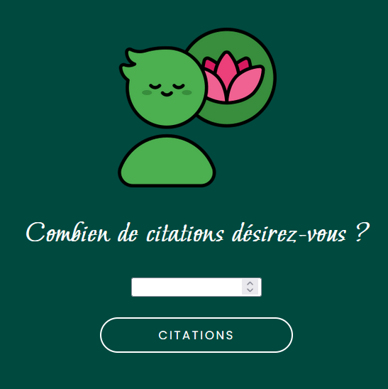

Projets

Création d'une application générant des citations aléatoires selon deux thèmes au choix : la sagesse et la nourriture. Possibilité pour l'utilisateur de choisir le nombre de citations.
Projet déposé sur mon Github, accessible ICI.
Création d'une application reponsive pour trouver les lieux de restauration CROUS à Lille (carte interactive) en utilisant Leaflet JS et l'API de Lille Métropole.
Possibilité de stocker ses adresses favorites dans un autre onglet.
Projet déposé sur mon Github, accessible ICI.